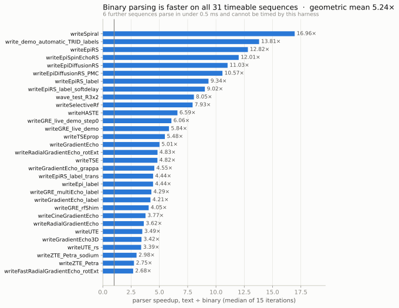
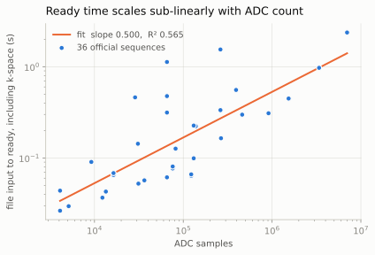
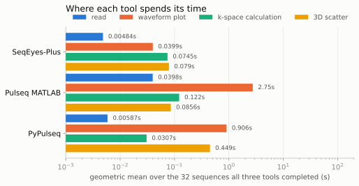

SeqEyes-Plus
SeqEyes-Plus reads Pulseq sequence files and draws what is in them: RF magnitude
and phase, three gradient axes, ADC and trigger events, the k-space trajectory,
a gradient spectrogram, and optional first-moment and advisory PNS estimates. It
accepts both Pulseq text (.seq) and binary (.bseq) input.
One TypeScript engine is packaged for four environments, so a sequence can be inspected without leaving the place it was written: a standalone browser page, a VS Code custom editor, a MATLAB toolbox, and a Python package that renders inline in Jupyter. It extends the SeqEyes lineage, designed from experience with SeqEyes Qt, with no Qt or C++ dependency.
This is the evidence behind it: what was tested, how, and what the results were.
Demos
🔬 Zoom, from the whole sequence to a few TRs
A spiral sequence from its full 5.4 seconds down to three repetitions and back, in one continuous movement. The amplitude axes zoom separately, one channel at a time with ctrl or cmd held: here Gz expands from the ±1.7 MHz/m shared gradient full scale to ±458 kHz/m, and its slice-select plateau and rewinder fill the row while the time window stays put.
Zoom in time keeps going past three repetitions, down to individual gradient samples, and at those depths the drawn trajectory is the native samples, one line segment each: nothing interpolated, and no segment between samples that are not adjacent.
How this was verified
384 windows, from one nanosecond wide up to a whole 695-second sequence, were each compared against a reconstruction built from the parsed shape that never calls the display path. 721,952 samples matched bit for bit. See the detail experiment.
🌐 K-space you can turn over
A 3D radial trajectory, all 122,880 acquired points: rotate, zoom toward the cursor, pan, resize the ADC markers, flip between perspective and projection. Rotation pivots on k = 0, so the cloud turns in place instead of orbiting an offset centre.
The cloud is the points acquired inside the visible time window, so it follows the sequence view. At the end of the clip the waveform panel zooms from the whole 860 ms to 21.6 ms, and the disc becomes the seven radial spokes acquired in that window - 3,049 of the 122,880 points. Fitting the sequence back to full width brings the rest back.
How this was verified
The settled view always contains the complete ADC trajectory: the optimisation that draws a strided subset while the camera moves restores every point once it stops. The plugin’s browser suite asserts that, along with the rotation pivot and that panning tracks the cursor within a pixel.
🎧 Sequence spectrogram, with the sound
The gradient spectrogram over the visible window, with the acoustic resonance bands a scanner declares drawn on top, played as audio while a marker crosses it.
How this was verified
Every column of the spectrogram was compared against an independently written short-time Fourier transform: 16,845,534 cells, all within its limit. See the spectrogram experiment.
🧩 The same engine, four places
Browser, VS Code, MATLAB, and Jupyter, each showing the same sequence through the same engine.
How this was verified
All four were exercised, plus a mobile browser layout, against the distributed artifacts rather than a development checkout. See the workflow experiment.
How SeqEyes-Plus was tested
The results below come from a point-in-time audit carried out in September 2026, against releases v0.3.6 through v0.3.8. Three properties of the method decide what the numbers mean.
Compared against something that is not SeqEyes-Plus
A test suite compares software to its own past behavior. It catches regressions and cannot catch an error that was always there. Every numerical experiment here therefore compares against an implementation written independently of the one it checks:
| Experiment | Checked against |
|---|---|
| Waveforms and k-space | Official Pulseq MATLAB |
| First moment M1 | A closed-form integral in 50-digit decimal arithmetic |
| Gradient spectrogram | A short-time Fourier transform written from the definition |
| RF response | A Bloch propagator using explicit 3D rotations, not spinors |
| Viewport detail | A reconstruction from the parsed shape that never calls the display path |
Two places where that independence could have leaked are closed by construction. The RF reference uses Rodrigues’ rotation formula while the implementation uses Cayley-Klein spinors, so an algebraic error in one cannot be reproduced by the other. The spectrogram reference writes its own window function rather than calling a library, because the implementation’s window is a periodic Hann advanced by one sample and matches neither of SciPy’s forms - calling for the wrong one would have produced a small, plausible, entirely spurious disagreement.
The reference had to prove itself first
A reference that is wrong in the same direction as the implementation proves nothing. Two experiments therefore required their oracle to reproduce a closed-form result before it was allowed to judge anything.
The spectrogram reference was given a sinusoid chosen to fall exactly on a transform bin. Its peak had to land in the predicted bin and carry the predicted amplitude:
| Check | Predicted | Measured |
|---|---|---|
| Peak bin | 204.000000 | 204 |
| Peak amplitude | 0.5 mT/m | 0.4999999974 |
That single check validates bin spacing, frequency-axis offset and the gyromagnetic scaling together. It failed on its first run and blocked the experiment until the cause was found - the limit had been set below the resolution of the float32 values being compared, so no correct implementation could have passed it.
The Bloch propagator was held to rect pulses whose flip angle follows from the time integral of B1. It reproduced 90, 180 and 30 degrees to 1.2e-16 relative, with Mz matching the cosine of that angle to 1.8e-14, and preserved |M| = 1 to 2.6e-14 throughout, since a propagator that loses the magnetisation norm is not a rotation.
Every limit was fixed before the measurement
Each numerical experiment declares a limit before it runs: the largest disagreement with its reference that will still count as agreement, written down with the reason for that particular value. A limit chosen after seeing the error is not a limit; it is a description of the error.
Four were amended, each before a result was accepted and each recorded with its basis. Three came from reading the implementation: amplitudes travel through the display transport as float32, phase is wrapped into [0, 2π), and the spectrogram matrices are float32 - so “exact” means exact after a float32 round, and a limit finer than float32 could not be met.
The fourth was prompted by a failure. The min/max band limit began as a per-column relative bound, and three windows exceeded it. A per-column relative bound is undefined where a waveform crosses zero: a column whose values sit near zero is held to a punishing absolute bound for no physical reason, and all three failures were at a single near-zero column. The replacement is the form the frozen protocol already uses for gradient comparison - absolute, scaled to the signal’s full scale.
Results
Each numerical experiment fixes a limit before it runs: the largest disagreement with its independent reference that will still count as agreement, recorded together with the reason for that value.
The k-space comparison makes it concrete. SeqEyes-Plus and Pulseq MATLAB each expand the same file into a trajectory; subtracting them coordinate by coordinate across 3,383,700 ADC samples leaves a largest difference of 1.19e-6 1/m. The limit set beforehand was 1e-5 1/m, an error far below anything that reaches a reconstructed image. The measurement is under the limit, so the two implementations agree by a standard fixed before either one ran.
Every numerical experiment came in under its limit. How far under differs by nine orders of magnitude across them, and that spread is a fact about the limits rather than about the results: one limit is the error that would change an image, another is the resolution of a float32. Each experiment reports its own measurement against its own limit, in its own units.
| Group | Experiments | Result |
|---|---|---|
| Numerical accuracy | 5 | all under their limits |
| Format equivalence | 2 | 37/37 and 37/37 |
| Scale and performance | 3 | timings, on one Apple M3 Pro |
| Workflow and platform | 1 | 5/5 surfaces |
The plugin moved during the work, and each result records the build that produced it: v0.3.6, v0.3.7 or v0.3.8. The re-measurements happened because these experiments found a defect, which was fixed and then confirmed - the appendix gives the sequence, and maps each section here to the protocol and result files behind it.
Numerical accuracy
🌀 Waveforms and k-space, against official Pulseq MATLAB
The question. Does SeqEyes-Plus expand a sequence into the same waveforms and the same k-space trajectory as the reference implementation the Pulseq community uses?
The design. Eleven representative sequences - Cartesian and non-Cartesian, labelled, rotated, single-shot and multi-echo - are read by official Pulseq MATLAB at a fixed B0 of 3 T. Both implementations expand waveforms and calculate the ADC k-space trajectory, and the results are compared at physical checkpoints: three gradient axes, RF magnitude, RF phase where the magnitude is at least 1e-6 of the sequence peak, and every ADC k-space coordinate.
Why the design is valid. Pulseq MATLAB is maintained independently of this project and is the implementation sequences are usually authored against. The RF-phase floor exists because phase is meaningless where there is no RF to carry it, and comparing it there would manufacture disagreement. The limits - 1e-5 1/m on k-space, 5e-6 relative on gradients - are the frozen abstract’s own, kept unchanged so this run is comparable to it. The reference itself is at a later commit than the frozen evidence used, so the result speaks for the current pair.
The result. 11/11 passed. The worst k-space error was 1.19e-6 1/m on ZTE PETRA, a sequence carrying 3,383,700 ADC samples, against a 1e-5 1/m limit.
🧮 First moment, against a closed-form integral
The question. Is the M1 calculation right, independently of how it is implemented?
The design. A Python reference evaluates the exact integral of each piecewise-linear gradient segment in 50-digit decimal arithmetic, and never imports SeqEyes code. Four cases - constant gradient, linear ramp, continuous bipolar, and an excitation/refocusing sign flip - are compared at every shared checkpoint, in both reference-time conventions.
Why the design is valid. The reference is not an approximation of the implementation; it is the analytic answer, computed to far more precision than the comparison needs. Decimal arithmetic removes the possibility that the reference and the implementation share a floating-point mistake.
The result. 4/4 passed in both conventions, with maximum errors near 3e-18 s/m against limits near 1.1e-9. The errors are bit-identical to those recorded against v0.2.8, so the M1 path has not moved through the entire v0.3.x line.
🔊 Spectrogram and acoustic analysis
The question. Does the gradient spectrogram compute what a short-time Fourier transform of the same signal computes, and does forbidden-band screening agree with an independent reading of the same profile?
The design. The spectrogram is compared column by column against a NumPy transform written from the definition, over eleven sequences at two configurations. One configuration disables decimation entirely, so the whole transform is compared with no filter in the path; the other is the panel’s default, where the reference consumes the implementation’s decimated samples and only the transform is under test. Six conventions had to be matched exactly: window shape, per-frame DC removal, zero-pad length, magnitude scaling, coherent-gain normalisation, and the gyromagnetic unit conversion.
Why the design is valid. The two configurations do different jobs. Reproducing the anti-aliasing filter would have made the reference a reimplementation, so the decimation-free configuration is where the independence lives; the default configuration then shows the transform is unchanged by the plumbing around it. The oracle was certified against a closed-form sinusoid before it judged anything.
The result. 16,845,534 matrix cells compared, none outside the limit, 99.69% of them bit-identical after a float32 round, worst disagreement 2.5e-11 of the matrix maximum. Acoustic band tables and out-of-range counts matched an independent parse exactly, including a profile carrying a decoy band under a different key prefix and a zero-frequency padding entry.
🧲 RF response, against a Bloch propagator
The question. Are the estimated band centres, per-band flip angle and Mz right for a multiband or adiabatic pulse?
The design. An independent Python propagator rotates the magnetisation through each hard-pulse segment using Rodrigues’ formula, without relaxation, and is compared against the implementation’s Cayley-Klein spinor evaluation. Cases are a stored multiband example, an MPRAGE hyperbolic-secant inversion, and rect and sinc pulses with analytic expectations.
Why the design is valid. The two use different algebra for the same physics,
so an error in the spinor formulation cannot be reproduced by the reference.
Mz carries the comparison because it is invariant to the handedness of
the rotation - the two formulations need not share a sign convention for
Mz to be comparable. The reported polar flip angle is acos(mz), a
function of Mz rather than an independent measurement, so it is
checked for consistency rather than counted as a second endpoint.
The result. Agreement at 1e-14, four orders inside the 1e-3 limits. The
multiband bands were located 1.15 Hz from where they were placed, well inside
the 7.63 Hz half-bin resolution of a 65,536-point transform - which is what that
limit was declared for. The 131,072-sample fallback was exercised at one sample
above the ceiling: the analyzer reported limited, analysed no spectrum, and
kept the carrier area correct to 8.2e-15.
This experiment also confirms three values the development record had claimed for the hypersecant case - 287.145 degrees of carrier area, 175.95 degrees of polar response, Mz = -0.9975 - independently reproducing them as 287.1448, 175.9515 and -0.997505.
🔍 Viewport detail: does the drawing tell the truth?
The question. When the viewer draws a waveform, is what appears on screen the data, or a summary of it?
The design. The detail path dispatches three ways by window size: every native sample below 50,000, a per-column min/max band below 2,000,000, and the precomputed hierarchy above that. Each regime is compared against a reconstruction built directly from the parsed shape. 384 windows are swept, from one nanosecond wide up to the whole sequence, over three sequences including the 459 MiB 4D-flow case - whose full width is 695 seconds, so the sweep covers twelve orders of magnitude.
Why the design is valid. The reference never calls the display path, so the comparison is not circular. The runner routes every window through the viewer’s own dispatch function and reads back which regime was chosen, rather than re-deriving the thresholds - an earlier version re-derived them and ended up testing a function the viewer never calls at two of the three zoom levels.
The band reference is derived from the definition rather than from the accumulation loop: on a piecewise-linear function the extremum over a column is attained at an endpoint of that column or at a native sample inside it, so evaluating both edges and every interior sample is exact.
The result. 294 of 294 exact-regime windows returned every native sample: equal counts, bit-exact times, and values bit-exact after the float32 round the transport applies - 721,952 samples compared. 54 of 54 band windows agreed, 106,562 of 106,705 columns bit-exactly, worst disagreement 0.125 Hz/m against a 1.7 MHz/m full scale. 36 of 36 hierarchy windows declined as the contract requires, and the load-time hierarchy preserved every block’s extrema.
The two rendering lanes are compared on dispatch and geometry: the standalone viewer reports which regime it chose and how many columns it produced, and exposes no accessor for the drawn values. Dispatch and geometry are what the lanes duplicate, and what drifted.
Format equivalence
⚖️ Does binary mean the same as text?
The question. A .bseq file is meant to be the same sequence as its .seq
counterpart. Is it?
The design. 37 paired files are read by both readers. E1 compares the parsed models: version and definitions, block order and duration, decompressed shapes, decoded RF, gradient and ADC events, extensions and metadata. E2 opens both in fresh browser pages and compares the state the viewer reaches, the validity of its canvases, and - after the change described below - the k-space each produces.
Why the design is valid, and a correction that was needed. E2’s comparison
originally read k-space content at load. Under v0.3.x k-space is calculated
lazily when the panel opens, so those fields were empty at capture time and
three of the nine comparisons were passing on null against null. The run was
reported as 37/37 and would have been published as equivalent to the frozen
37/37, which compared up to 6,428,672 real ADC samples. The comparison now
captures state a second time, after k-space has actually been calculated, and
records how many checks compared something.
The result. 37/37 paired-format agreement and 37/37 browser parity, with k-space compared for all 37 against 35 in the frozen run, and no console errors. Trajectory and ADC sample counts are identical to the frozen evidence on every pair in both formats - exact equality, not a limit.
A difference between the two formats. The two formats’ k-space trajectories differ by up to 2.8e-3 1/m, about 2e-5 of the trajectory extent. No limit covers this one; it had never been measured, because E2 compared sample counts rather than values. The appendix gives the per-sequence measurement, and a hypothesis about its cause.
Scale and performance
Three timing experiments, all on one Apple M3 Pro at the recorded software versions.
⚡ What binary input changes
The question. Binary files parse faster and take less space. By how much, and does that make the viewer faster?
The design. Both files of each pair are parsed from bytes already in memory, three warm-up and fifteen measured iterations per format, with the format order alternating. File acquisition and parsing are timed separately, and the browser endpoint is measured apart from both.
Why the design matters here. Parser time is not viewer time. The two formats share everything after parsing - timing detection, block decoding, rendering, k-space - so the parser result and the browser result are reported separately.

The result. Parser speedup 5.24x geometric mean across 31 sequences; storage 26.0% smaller. Six further sequences parse in under 0.5 ms, below what this harness can resolve; they are named and excluded from the mean.
What one run could not settle. The first comparison against the frozen numbers appeared to show 20-37% regressions on three sequences. Within-run sample spread reaches 23-870% of the median, so a single run cannot separate a version difference from ordinary variation. A repeat run put all three inside their own noise, and the aggregate moved by 0.010x against a 0.061x noise floor.
📈 How ready time scales with sequence size
This is Figure 2B-C of the abstract.
The design. File-input-to-ready time for each .bseq, against the ADC sample
count, fitted log-log. The fit is descriptive: ADC count is one term in the
workload, not the whole of it, and the scatter shows how much else there is.

The result. Slope 0.500, R² 0.565, against 0.557 and 0.600 frozen - the same weak sub-linear relationship.
Where the clock is read. Measured from outside the browser, this endpoint carries about 124 ms of harness round-trip. A near-constant offset on a power law flattens its slope, most where the underlying time is smallest: fitted that way the slope came out 0.311, which would have read as a large regression in scaling and was entirely an artifact of the measurement point. The endpoint is reconstructed from in-page marks alone.
⏱️ The same workflow in three tools
This is Figure 2B-D of the abstract.
The question. How long does the same inspection workflow take in each tool: read a sequence, plot its waveforms, calculate the ADC k-space, and draw the 3D scatter?
The design, and why it changed. The frozen figure reported one number per tool. That composite was built from a formula that covered k-space only while k-space was calculated during load; under lazy calculation it covers it for some sequences and not others. Assembled anyway it gave 27.6x against MATLAB where the frozen run gave 8.4x - a threefold jump in our own favour, produced by work falling outside the measurement rather than by any improvement.
The composite is retired. Two endpoints are reported instead, each defined by what it measures:
- A — file input to sequence diagram ready
- B — k-space requested, to calculated and drawn
MATLAB and PyPulseq already record the four components that compose these, so only the SeqEyes-Plus lane needed re-measuring. Its endpoint B is timed inside the page: the page clocks its own click, watches its own state, and returns one elapsed number, so no process round-trip falls inside the interval.

The result. Geometric mean relative to SeqEyes-Plus, over the sequences each tool completed:
| Tool | A: to diagram | B: to k-space drawn | Cases |
|---|---|---|---|
| Pulseq MATLAB | 62.1x | 1.32x | 36 |
| PyPulseq | 20.1x | 2.61x | 32 |
Nearly all of the difference is in getting a sequence on screen. Once k-space is requested, the three tools are within a small factor of each other.
The components show things a ratio hides. PyPulseq’s 3D scatter on the spiral
case takes 7.708 s against MATLAB’s 0.115 s. And on writeFid,
SeqEyes-Plus is the slower tool for endpoint B - 0.514 s against MATLAB’s
0.060 s - because its k-space path carries a fixed cost for opening the panel
and preparing the WebGL layer, which dominates on a sequence that small.
Four cases PyPulseq could not read. Three carry rotation extensions and one an RF-shim extension, which PyPulseq 1.5.0.post1 does not support against Pulseq 1.5.1 files. They are counted in the dataset as failures, which is why PyPulseq’s denominator is 32 and MATLAB’s is 36.
Not comparable to the frozen ratios. The frozen 8.438x and 4.618x were measured when one formula covered different work. They are not the same quantity as the numbers above.
Workflow and platform
🖥️ Four environments, plus mobile
The question. Can a sequence be inspected without leaving the environment it was developed in?
The design. Each host is exercised on its own terms: the standalone viewer
under Chromium, the VS Code extension through its extension host, the MATLAB
toolbox by building a figure from an in-memory mr.Sequence, and the Python
package through the IPython display path in both its file and in-memory modes.
Mobile is covered at declared phone viewports.
Why the design changed. The frozen run exercised development-tree scripts. That establishes that the code works, not that what a user installs works. This run drives the distributed artifacts: the installed 0.3.8 MATLAB toolbox and the 0.3.8 wheel resolved from site-packages.
The result. 5/5. 29 browser tests; 10 extension-host tests with the host exiting cleanly, covering custom-editor and command-driven open, k-space export, binary fixtures, spectrogram over a view window, ASC profile loading and parse-error handling; a MATLAB figure built from a 2,567-block sequence with the host stamped and the sequence preloaded; the Python display object, inline iframe, embedded viewer and binary bytes all present; and 31 spectrogram-panel tests including the portrait mobile layout.
Try it
| Standalone viewer | a single page, no install |
| VS Code | seqeyes-web extension, opens .seq and .bseq as a custom editor |
| Python | pip install seqeyes-python, renders inline in Jupyter |
| MATLAB | toolbox, seqeyes(seq) on an in-memory mr.Sequence |
Source: bughht/seqeyes_plugin.